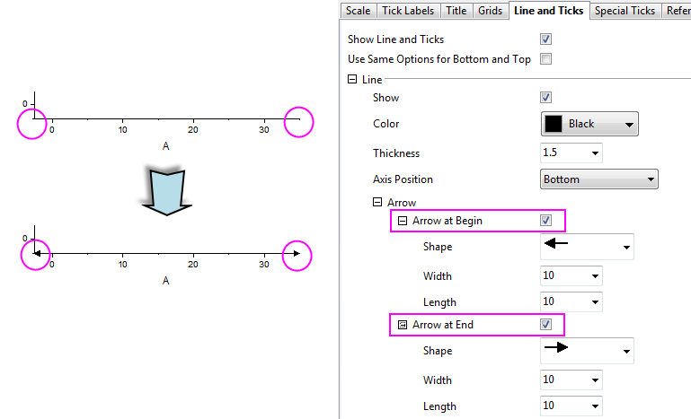

FAQ-881 How to add an Arrow at the Begin/End of the axis?
Add_Arrow_At_Axis
Last Update: 9/12/2017
On the graph, you could add an Arrow at the Begin/End of the axis in Axis dialog:
- Double click on the axis to open the Axis dialog.
- Go to Line and Ticks tab, then expand Arrow node under Line branch.
- Select the Arrow at Begin or Arrow at End check box.
- Also, you can expand the node of Arrow at Begin or Arrow at End to specific the format of the Arrow.

Keywords:axis, arrow, arrow at begin, arrow at end
Minimum Origin Version Required: 2018 SR0